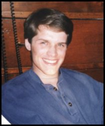

|
| |
My full
name is Michael Patrick Giesler, though I prefer Mike. I am 23 years
old. I finished college in December graduating from the
University of Wisconsin - Madison with a
major in computer science. I
now work for a consulting company in Milwaukee - Norstan
Consulting.
I made this web site just because I like doing things
on computers and the Internet. Plus this is a very convenient way to
put pictures of family and friends online, and anyone that cares to look at
them can whenever they want. A few things I like...
 | Music: I listen to stuff like
alternative, rock, new rock, or whatever... I don't know what to call
the kind of music I like to listen to. My favorite radio
station in Madison, though, is 92.1 WMAD. And I'd have to say my
favorite band is probably Dave Matthew's Band (thank you Sara). |
| TV: I never miss X-Files.
And I watch the Simpsons all the time (though I may not get to watch
it daily with a regular job) |
| Movies: Pretty typical 'guy' movies -
action, adventure, sci-fi, such as Independence Day, the X-Files
movie, Men in Black, and Matrix. A more recent
example of a movie I really liked is American Beauty. |
| Food: Spam! Not.
Though it is pretty good when camping. Pizza. Yep.
And steak. And chocolate chip cookie dough ice cream. And a
good burger, somewhere like the Nitty Gritty (Madison). |
| Books: The Hitchhiker's Trilogy, by Douglas
Adams, and any book by Michael Crichton (Jurassic Park, The Lost World, Sphere,
& Congo... all of which turned out to be great movies, though not as good as
the books.) Gotta admit, though, I haven't read any books outside
of school in over a year. |
| Sports: I really loved
sitting in the student section at UW-Madison home football games, but
since I graduated I don't think I'll be able to do that any
more. Though I'm sure I'd still have a good time at any
game. I like going to pretty much any game - Brewer's baseball,
and even (one that surprised me) UW volleyball is fun to go to. Besides that I'm not too into sports. |
| Hoofers.
Hiking, camping, sailing, hockey, indoor and outdoor rock climbing, canoeing, kayak
rolling, and more. I am in the Outing Club and
Sailing Club, two of a half dozen or so Hoofer clubs -
an organization at UW's Memorial Union. This past summer I learned how to sail a
Tech - a boat about twice the size of a bathtub. |

Me, March 98
|
|